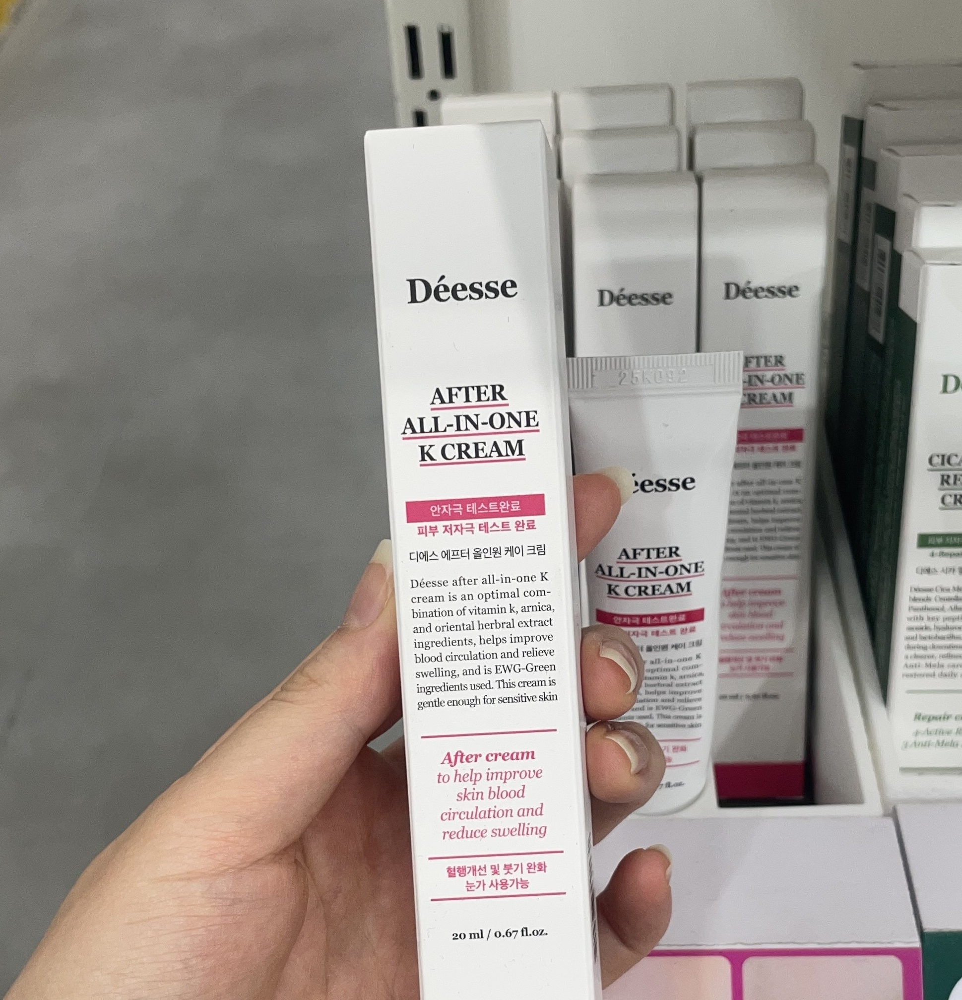
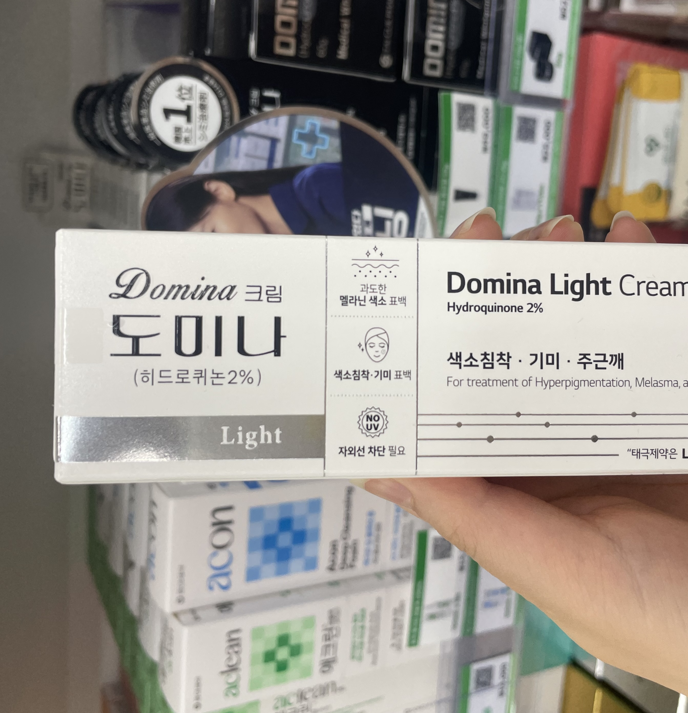
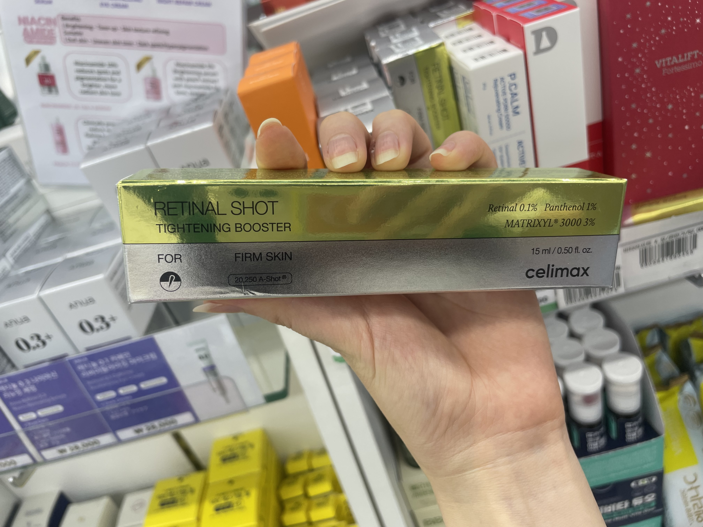
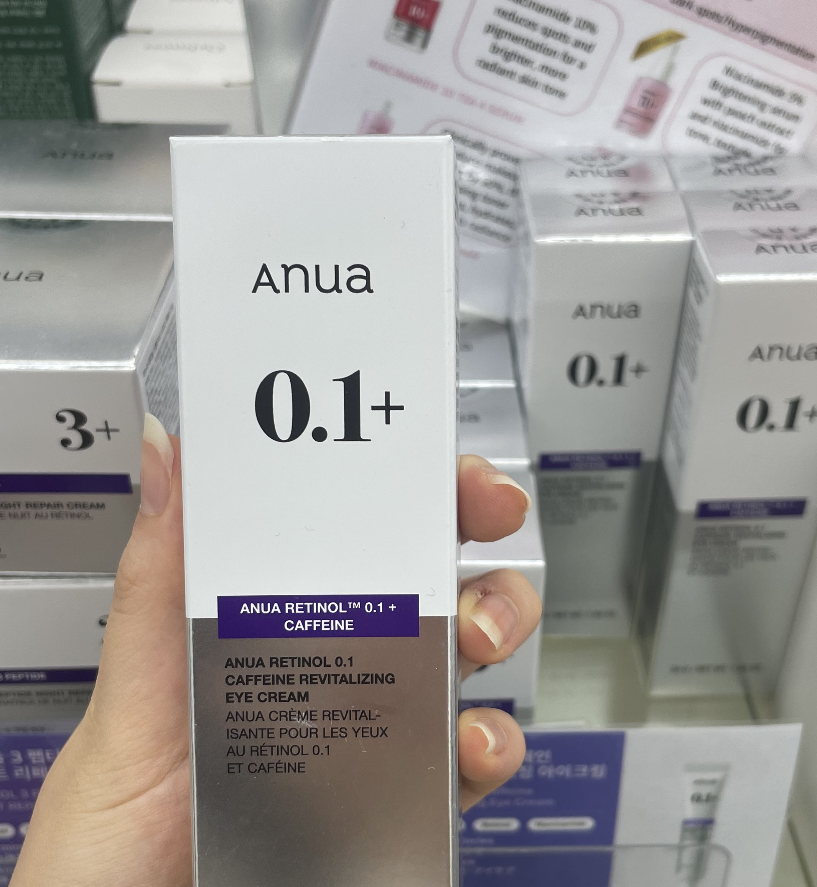
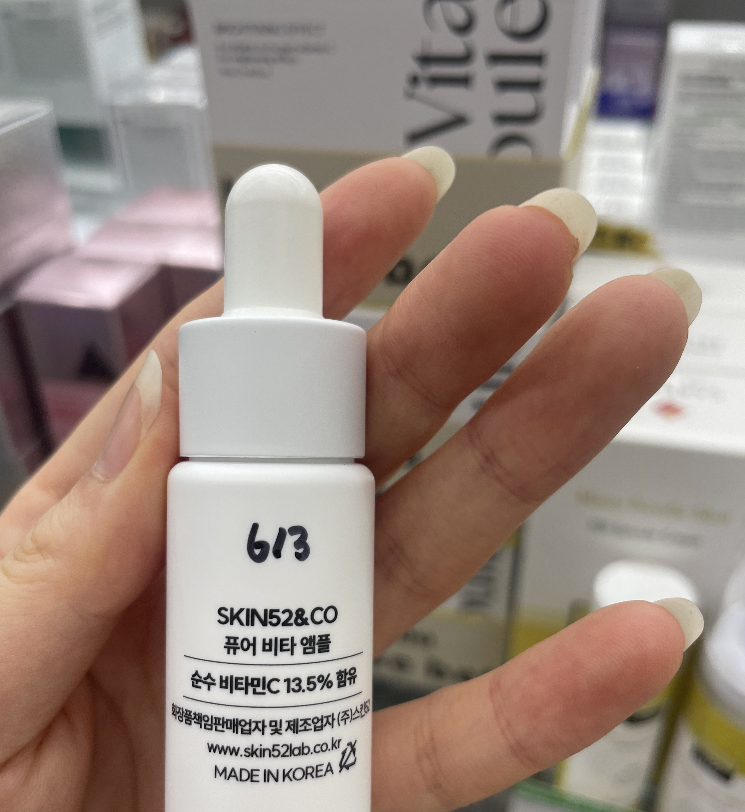
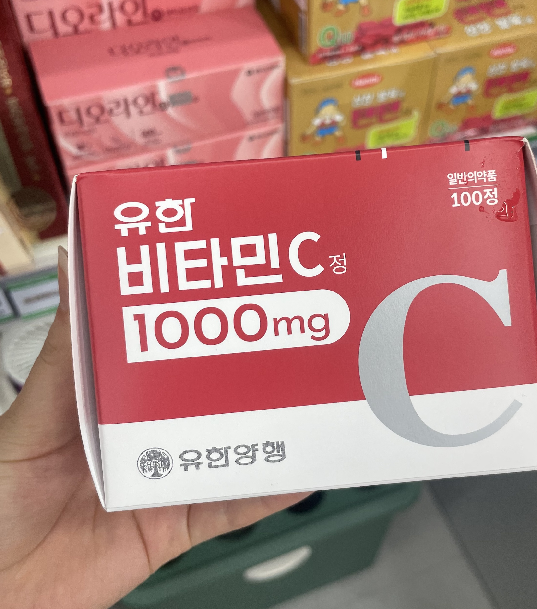

EIGHT PHARMACY
Customized Dark Circle Solutions by Symptoms
Product Guide by Symptoms

Déesse After K Cream
Mechanism: Vitamin K and Arnica work together to improve microcirculation in capillary walls, significantly reducing internal bruising and under-eye redness.
How to use: Apply gently to the eye area or full face during AM & PM routines.

Domina Light Cream
OTC Drug
Mechanism: Formulated with Hydroquinone 2% to inhibit Tyrosinase, the fundamental cause of melanin synthesis. Highly effective for fading targeted pigmented spots.
Precautions: PM Only. Apply a tiny amount strictly to dark brown spots using a cotton swab. Keep away from eye membranes.

Celimax Retinal Shot Booster
Mechanism: Pure Retinal 0.1% combined with micro-spicules accelerates collagen synthesis to increase skin thickness, resolving visible background veins underneath thin skin.
Precautions: PM Only. Apply every other night initially to build skin tolerance. Sunscreen is mandatory the next morning.

Anua Retinol 0.1 + Caffeine Eye Cream
Mechanism: Synergistic blend of Retinol and Caffeine to tighten delicate skin structures and constrict surface blood vessels to diminish morning eye puffiness.
How to use: During your PM routine, gently tap around the orbital bone area.

SKIN52&CO Pure Vita Ampoule
Mechanism: Contains 13.5% Pure Vitamin C providing continuous antioxidant protection. It neutralizes oxidative stress and brightens dull, uneven skin tones around the eyes.
How to use: Apply right after toner stage. Always follow up with high-SPF sunscreen if used in the morning.

Centellian24 PDRN Glowing Eye Patch
Mechanism: Infused with active PDRN and TECA to immediately restore the moisture barrier, reducing fatigue shadows and offering an instant cooling glow.
How to use: Use 2-3 times weekly. Leave patches on the under-eye area for 20-30 minutes before removal.

Yuhan Vitamin C 1000mg
OTC Oral
Mechanism: High-dose oral Vitamin C reinforces inner capillary walls and supports base collagen generation, acting as an essential inner-beauty booster.
Dosage: Take 1 tablet, 1-2 times daily, immediately after meals to avoid stomach irritation.
Recommended Synergy Routine
☀️ AM Routine
Cleansing → Pure Vita Ampoule (Optional) → Déesse K Cream → Sunscreen (Mandatory)
*Take Vitamin C tablet after breakfast
🌙 PM Routine
Cleansing → Toner → Celimax Retinal Shot (or Anua Eye Cream) → Domina Cream (Apply a tiny amount via cotton swab strictly on brown spots)
症状別製品ガイド
Déesse アフター K クリーム
メカニズム: ビタミンKとアルニカ成分の相互作用により、毛細血管の微小循環を効果的に改善し、滞った血行による青みや目元のどんより感をケアします。
使用方法: 朝と夜のスキンケアの際、目元や顔全体に優しくなじませます。
ドミナ ライト クリーム
一般医薬品
メカニズム: ハイドロキノン2%が、メラニン生成の根本原因であるチロシナーゼの活性を強力に抑制し、茶色く定着してしまった色素沈着をピンポイントで薄くします。
注意点: 夜間のみ使用。綿棒を使い、茶色いシミ・色素沈着の部分にのみ薄く点付けしてください。粘膜に入らないよう注意が必要です。
Celimax レチナールショット
メカニズム: 純粋レチナール0.1%と微細な天然針（スピキュール）がコラーゲン生成を強力に促し、皮膚の厚みを強化。薄い皮膚から血管が透けて見えるのを根本から防ぎます。
注意点: 夜間のみ使用。最初の2週間は肌を慣らすため1日おきに使用し、翌朝は必ず日焼け止めを塗ってください。
Anua レチノール 0.1 + カフェイン アイクリーム
メカニズム: レチノールとカフェインの高効率な組み合わせが、目元のハリを高めると同時に、表面の毛細血管を適度に収縮させ、朝の不快なむくみをすっきりとケアします。
使用方法: 夜のスキンケアの最後に、目元の骨に沿って優しく叩き込むように馴染ませます。
SKIN52&CO ピュアビタアンプル
メカニズム: 純粋ビタミンC 13.5%による優れた抗酸化作用が肌を保護。酸化ストレスをブロックし、目元全体のくすんだ印象をパッと明るいトーンへと導きます。
使用方法: 化粧水（トナー）のすぐ後に使用します。朝に使用する場合は、必ず日焼け止めを併用してください。
センテリアン24 PDRN アイパッチ
メカニズム: PDRNとシカ（TECA）成分が目元に豊かな潤いを素早く届けます。疲れた目元のコンディションを即座に整え、みずみずしい透明感を与えます。
使用方法: 週2〜3回、洗顔後に目元へ密着させ、20〜30分ほど経ってから剥がします。
柳韓 ビタミンC 1000mg
内服医薬品
メカニズム: 高濃度のビタミンCが内側から毛細血管の壁を丈夫にし、コラーゲンの結合をサポートすることで、血管が透けにくい健康的なベースを作ります。
服用方法: 1日1〜2回、胃への負担を減らすため、食後すぐに1錠を水で服用します。
おすすめの併用ルーティン
☀️ 朝のルーティン（AM）
洗顔 → ピュアビタアンプル（選択） → Déesse K クリーム → 日焼け止め（必須）
*朝食後にビタミンC錠剤を服用
🌙 夜のルーティン（PM）
洗顔 → 化粧水 → Celimax レチナールショット（またはAnuaアイクリーム） → ドミナクリーム（色素沈着部分のみに綿棒で薄く点付け）
依症狀推薦產品指南
Déesse 術後全效 K 修護霜
核心原理： 維他命K與阿尼卡成分相互 oriental 作用，有效改善毛細血管微循環，淡化因血液淤滯或皮膚過薄而透出的青色陰影。
使用方法： 早晚護膚時，均勻塗抹於眼周肌膚或全臉。
Domina 褪斑美白霜 Light
一般藥品
核心原理： 含有 2% 對苯二酚 (Hydroquinone)，能強力阻斷黑色素生成的關鍵酪氨酸酶，針對已形成的深色色素沉著進行高效淡化治療。
注意事項： 限夜間使用。請務必使用棉花棒，極少量地「點塗」於褐色暗沉部位，切勿靠近眼瞼粘膜。
Celimax A醛緊緻精華
核心原理： 高活性 0.1% A醛 (Retinal) 結合天然微針，能直接激活真皮層膠原蛋白新生，增加皮膚厚度，從根本改善血管暴露引起的黑眼圈。
注意事項： 限夜間使用。初期請隔日使用以建立肌膚耐受性，隔日白天必須徹底塗抹防曬霜。
Anua 視黃醇咖啡因眼霜
核心原理： 視黃醇與高濃度咖啡因的黃金組合，能有效收緊眼周鬆弛結構，並使表層微血管適度收縮，快速消除早晨眼部的浮腫與眼袋。
使用方法： 夜間護膚最後階段，順著眼眶骨周圍輕柔拍打至吸收。
SKIN52&CO 純維他命C安瓶
核心原理： 含有 13.5% 高活性純維他命C，提供強大的抗氧化屏障，中和自由基，全方位還原黑色素，改善眼周發黃、暗沉的疲憊膚色。
使用方法： 於化妝水後使用。若於日間使用，後續必須搭配高係數防曬產品。
Centellian24 PDRN 煥采眼膜
核心原理： 快速注入 DNA-PDRN 與高效積雪草 (TECA) 成分，即刻為乾燥脆弱的眼周肌膚密集補水、舒緩，消除疲勞引發的眼部暗 family。
使用方法： 每週使用 2-3 次。貼於眼下靜置 20-30 分鐘後取下即可。
柳韓 維他命C錠 1000mg
內服藥品
核心原理： 高劑量口服純維他命C可從體內深層強化微血管壁，提升血管彈性並輔助全身抗氧化，阻斷黑色素沉著。
服用方法： 每日 1-2 次，每次 1 錠，請於飯後立即服用以減少胃部刺激。
建議高效護膚步驟
☀️ 日間護膚步驟 (AM)
潔面 → 純維C安瓶（選用） → Déesse K 修護霜 → 防曬霜（必須）
*早餐後服用維他命C片
🌙 夜間護膚步驟 (PM)
潔面 → 化妝水 → Celimax A醛精華（或 Anua眼霜） → Domina 美白霜（僅用棉花棒局部「點塗」於暗沉斑點處）